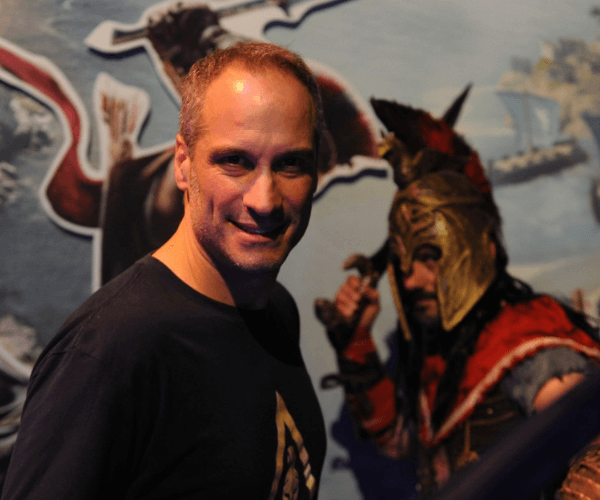

Pablo Toscano, director técnico de animación de uno de los juegos más importantes de la década pasada
Pablo Toscano se fue de Argentina en 2003 hacia Quebec, donde comenzó a trabajar en la compañía Frima Studios. Posteriormente, se unió al grupo de trabajo de Ubisoft Quebec, donde desarrolló uno de los juegos más importantes del 2018, el Assassin’s Creed Odyssey.
Por: Tomás Aronna San Martín
¿Qué significa el nuevo juego de Assassin’s Creed para vos?
Assasssin’s Creed Odyssey trajo un gusto distinto a mi carrera porque cuando estábamos desarrollando este juego pudimos sentir algo especial y de muy buena calidad.
¿Cómo ingresaste al mundo del desarrollo de videojuegos?
Cuando emigré de Argentina hacia Quebec en 2003, me fui con conocimientos bastante generales de lo que es el 3D, de hecho, en Argentina lo usaba mucho para la arquitectura que fue lo que estudié. Cuando llegué a Canadá me pude deconstruir y pensar en qué quería seguir haciendo con esto y la industria de los videojuegos me ofrece todo lo que me interesa que es tecnología y arte.
¿Cómo es el sistema de juego de este título?
En este episodio de Assassin’s Creed, tenemos la elección del personaje como pilar principal. El jugador puede elegir si quiere jugar con Cassandra o con Alexios, un personaje femenino y otro masculino; es la priemra vez en la historia de la licencia que hacemos esto. Una vez que el jugador va ganando experiencia con el personaje elegido, cada decisión o cada interacción con el universo va a marcar un nuevo destino, a tal punto que van a poder encontrarse con Sócrates o algún griego de la época y la respuesta que se le de va a alterar totalmente la experiencia de juego llegando al punto de poder tener varios finales diferentes en los que el personaje se va construyendo a medida que pasa el tiempo. Dependiendo de las decisiones, el personaje va a ser más oscuro o más “luminoso” según las posturas que vayas tomando a lo largo del juego.
¿Qué diferencias tiene con otros títulos de la saga?
Tenemos muchas cosas distintas con los juegos anteriores. Por ejemplo, el mapa es del doble que el del Assassin’s Creed Origins –juego lanzado en 2017-, tenemos una variedad de ecosistemas impresionantes, biomas donde hay islas volcánicas, montañas, nieve, los atardeceres son magníficos, bosques. También agregamos el photomode, un modo en el cual podemos sacar fotos durante el juego, que creemos que sirve para demostrar un poco la belleza del juego y el buen trabajo que se hizo durante el desarrollo. Yendo más a la experiencia más propia de juego, el hecho de poder elegir un personaje marca una diferencia con respecto a todo lo que se hizo antes. Todo lo que es el sistema naval, tanto de navegación como de batallas fue completamente rehecho y le agregamos un sistema de reclutamiento que vuelve más interesante al juego, poder ir caminando por Atenas o por Esparta y ver algún personaje que interesa ya sea por la armadura o por sus habilidades y poder reclutarlo. Cada personaje que veas que te parezca interesante se puede reclutar y verlo en el barco aumentando las capacidades de tu embarcación.
¿Recomendarías el Assassin’s Creed para gente que nunca estuvo metida en el mundo de los videojuegos?
Para los que no conocen la industria de los videojuegos, Assassin’s Creed Odyssey es una excelente posibilidad para empezar a jugar. Tenemos una historia en la cual parte del entretenimiento está en encontrar personajes históricos de la antigua Grecia y vivir una simulación con un nivel de realismo impresionante y con un detalle de lo que son los elementos históricos como nunca vimos en otro tipo de juego. También está la experiencia de poder viajar en el tiempo y ser un ateniense o un espartano y poder mirar esta “realidad virtual” con los ojos de alguien que está descubriendo por primera vez Atenas o Esparta.